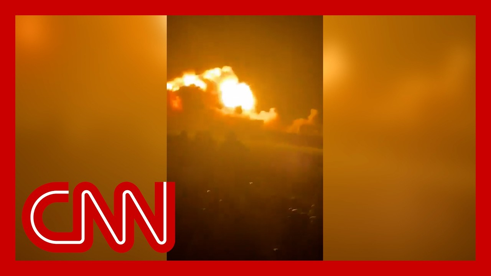

来B站一起耍【Global每日英语简报】
【视频显示印度袭击巴基斯坦，紧张局势升温】
Summary: The death toll is rising from Indian military strikes on Pakistan, raising fears of war between the two nuclear-armed rivals.
摘要： 印度对巴基斯坦的军事袭击导致死亡人数上升，引发人们对这两个核武对手之间爆发战争的担忧。

⏱️ Estimated Reading Time: 12 min
The death toll is rising from Indian military strikes on Pakistan.
印度对巴基斯坦的军事袭击导致死亡人数上升。
raising fears that two nuclear armed rivals are moving closer to war.
引发人们对这两个核武对手之间爆发战争的担忧。
A Pakistani military spokesperson tells Reuters at least 26 civilians have been killed and 46 injured.
巴基斯坦军方发言人告诉路透社，至少26名平民丧生，46人受伤。
Including India claims to have targeted terrorist infrastructure in several locations inside Pakistan and Pakistan administered Kashmir.
印度声称袭击了巴基斯坦境内及巴控克什米尔多个地点的恐怖分子基础设施。
India insists its missile strikes were, quote, focused and precise and designed to be non escalatory in nature, but Pakistan rejects that claim.
印度坚称其导弹袭击是“精准且克制的”，但巴基斯坦驳斥了这一说法。
Pakistan also says it shot down five Indian Air Force jets and a drone.
巴基斯坦还称击落了五架印度空军战机和一架无人机。
CNN cannot independently confirm those claims and this just in, according to a senior Indian defense source.
CNN无法独立核实这些说法，而据印度一名高级国防消息人士最新透露。
Pakistani shelling in Indian administered Kashmir has now killed eight people.
巴基斯坦在印控克什米尔的炮击已造成八人死亡。
These back and forth attacks come about two weeks after gunmen massacred 26 tourists in Indian administered Kashmir.
这些交火发生在印控克什米尔26名游客遭枪手屠杀约两周后。
India quickly accused Pakistan of supporting terrorists in the region.
印度迅速指责巴基斯坦支持该地区的恐怖分子。
Pakistan denied any responsibility.
巴基斯坦否认负有任何责任。
The two sides have also been exchanging shelling and gunfire across their disputed border.
双方还在争议边境地区互相炮击和交火。
This is the first time since 2019 that India has struck inside Pakistani territory.
这是自2019年以来印度首次袭击巴基斯坦境内目标。
The attacks in Punjab province are the deepest since the 1971 war.
对旁遮普省的袭击是自1971年战争以来最深入的一次。
and we want to go live now to CNN's Paula Hancocks.
现在我们连线CNN的Paula Hancocks。
Following developments from Abu Dhabi.
她在阿布扎比跟进最新进展。
Good to see you, Paula.
Paula，很高兴见到你。
So what is the latest on these developments in the wake of India's military strikes on Pakistan?
印度对巴基斯坦发动军事袭击后，目前的最新情况如何？
Well, Rosemary, India says that it carried out these strikes in the early hours of Wednesday morning starting at 1:05 a.m..
Rosemary，印度称其在周三凌晨1:05发动了这些袭击。
And they say that they lasted 25 minutes.
并表示袭击持续了25分钟。
Now, from the Indian side, we are hearing that they made sure they did not target civilians or any economic or military infrastructure from the Pakistan side.
印度方面表示，他们确保没有针对平民或任何经济及军事基础设施。
We are hearing that that simply wasn't the case.
但巴基斯坦方面称事实并非如此。
So first of all, the statement from the Indian Defense Ministry, they said, quote, our actions have been focused, measured and non escalatory in nature.
印度国防部声明称：“我们的行动是精准、克制且非升级性的。”
No Pakistani military facilities have been targeted.
没有以巴基斯坦军事设施为目标。
India has demonstrated considerable restraint in selection of targets and method of execution.
印度在目标选择和执行方式上表现出极大克制。
But what we are hearing from the Pakistan side is that civilians and also mosques have been targeted.
但巴基斯坦方面称平民和清真寺也遭到袭击。
officials saying that some six locations, these strikes took place and at least 26 were killed.
官员表示袭击发生在约六个地点，至少26人丧生。
They say civilians, including children, at least one as young as three years old, also saying that some 46 have been injured.
死者包括儿童，至少一名三岁幼童，另有约46人受伤。
Now, Pakistan's Prime Minister, Shehbaz Sharif has said that he considers this an act of war, saying that Pakistan has the right to give a befitting reply.
巴基斯坦总理夏巴兹·谢里夫称这是战争行为，表示巴方有权予以有力回击。
Now, Pakistan also claims that it has shot down five jets and a drone of the Indian Air Force, also claiming that three of them are Rafale jets.
巴基斯坦还声称击落了五架印度空军战机和一架无人机，其中三架为阵风战机。
This is a very sophistic, dated French made jet, which is really a prized asset of the Indian Air Force.
这是印度空军非常珍视的法国制造先进战机。
We have heard from the Indian military since those claims, but they have not engaged with those claims at all.
印度军方尚未回应这些说法。
CNN cannot confirm or deny that that is the case.
CNN无法核实这些说法的真实性。
And we are also hearing that there has been more cross-border fire from Pakistani controlled Kashmir into the Indian administered Kashmir.
我们还获悉，巴控克什米尔向印控克什米尔发射了更多跨境炮火。
this Wednesday morning as well, in retaliation to those strikes, another eight have been killed in those we understand on the Indian side of the administered disputed territory.
周三上午的报复性袭击造成印控争议地区八人死亡。
there are evacuation plans taking place to to more safe areas.
当地正在实施向更安全地区疏散的计划。
It is of great concern that these two nuclear powered countries are seeing this increased tension.
这两个拥核国家紧张局势升级令人高度担忧。
Countries around the world, the U.S., China and the United Nations calling both to show restraint.
美国、中国和联合国等国际社会呼吁双方保持克制。
India carrying out the deepest strike in Pakistan in more than 50 years.
印度实施了50多年来对巴基斯坦最深入的袭击。
Video shared on social media shows the moment of impact from one of those strikes.
社交媒体视频显示其中一次袭击的爆炸瞬间。
India says it was targeting, quote, in the wake of a tourist massacre in the disputed territory of Kashmir.
印度称袭击是对克什米尔争议地区游客屠杀事件的回应。
Pakistan has denied any involvement in that.
巴基斯坦否认与此事有关。
military says India strikes killed at least 26 civilians, including children.
巴军方称印度袭击造成至少26名平民死亡，包括儿童。
And security sources there say five Indian Air Force jets and drones were shot down during this attack.
巴安全消息人士称此次袭击中击落了五架印度空军战机和无人机。
Now Pakistan is vowing retaliation.
巴基斯坦誓言报复。
This is a serious situation, one of the worst we've seen in the region in years.
这是该地区多年来最严重的局势之一。
Let's get right to CNN's Nic Robertson, who was in Pakistan's capital, Islamabad, for the very latest.
现在连线CNN的Nic Robertson，他在巴基斯坦首都伊斯兰堡带来最新消息。
Good morning. Nic.
早上好，Nic。
Yeah, good morning, John, and good afternoon from here.
John早上好，这里下午好。
It was just around about lunchtime today, just before lunchtime here that Pakistan officials held a national Security Committee meeting.
就在今天午餐时间前，巴基斯坦官员召开了国家安全委员会会议。
That's the top government officials, along with the top security officials.
政府高层与安全部门负责人参会。
The prime minister following that said that the Pakistan Army was entitled to act in self-defense.
总理会后表示巴基斯坦军队有权自卫。
He said, with, quote, corresponding actions.
他说将采取“对等行动”。
He also said that the Pakistani army should avenge the death of innocent civilians among the dead.
他还表示巴军方应为无辜平民的死亡复仇。
A government officials are saying was a three year old girl.
官员称死者包括一名三岁女童。
Among the damaged properties was a seminary.
受损建筑包括一所宗教学校。
the head of that seminary is the leader of a group called Jaish e Mohammed, who actually claimed a terror attack inside Indian controlled Kashmir in 2019.
该校负责人是穆罕默德军头目，该组织曾宣称对2019年印控克什米尔恐袭负责。
back then it was a suicide bomber killing, 40 Indian, security forces in that attack.
当时自杀式炸弹袭击造成40名印度安全人员死亡。
that appears to have been the site of one of India's targets.
该地点似乎是印度此次袭击的目标之一。
India has not provided, Pakistani officials as far as we've been told, with with evidence of, the alleged involvement in that massacre of 26 civilians.
据我们所知，印度未向巴方提供26名平民屠杀事件的相关证据。
Neither have they provided, information about their allegations in this attack, that they say that they were preempting a terror attack.
印度也未提供关于其声称此次袭击是为预防恐袭的证据。
However, the leader of that of that seminary, the leader of Jaish e Mohammed, that called, he says that ten of his family members, including children, were killed in the strike.
但穆罕默德军头目称袭击造成其十名家人死亡，包括儿童。
But his most recent telegram posting was a threat against India.
而他最新电报帖文包含对印度的威胁。
His organization has a track record of targeting India.
该组织有袭击印度的历史。
So a lot to unpack.
情况非常复杂。
But the words of the Prime minister after that security, committee meeting a very powerful it is emotive that women and children are among the dead and injured.
总理在安全委员会会议后的讲话极具分量，妇女儿童伤亡令人动容。
It is a motive that a a mosque has been hit.
清真寺遇袭也令人愤慨。
It is a motive that this strike has been the deepest into Pakistan since 1971.
这是自1971年以来对巴基斯坦最深入的袭击。
But quite the move that the military move that Pakistan has vowed to take.
巴基斯坦誓言采取的军事行动将非常重大。
that next is unclear, but certainly this leaves the way open for significant escalation.
下一步尚不明确，但局势显然可能大幅升级。
John.
John。
Yeah. Combustible ingredients here you have two powerful militaries and decades, frankly, of grievances, as I do want to quickly move to another really speaking of mutually destructive, a really important development that we have seen when it comes to India and Pakistan.
是的，这两个强大军队和数十年积怨如同易燃物。关于印巴相互毁灭性局势，还有一个重要进展。
tensions escalating, war on the brink of war.
紧张升级，战争一触即发。
What can you tell us about what the white House is saying about this?
白宫对此有何表态？
Yes, obviously, this has been something that the white House has been monitoring very closely for roughly two weeks now.
白宫过去两周一直在密切关注此事。
And they had said after the attack that essentially, from what we've been hearing from senior officials, this includes the vice president himself that they, recognize that there needs to be some sort of a response from India, that they supported that.
高级官员包括副总统表示理解印度需要作出回应，并予以支持。
But they also argued that whatever response India, went with had to be proportionate and responsible.
但他们强调印度的回应必须相称且负责任。
Essentially, their main goal here is, of course, they don't want this to escalate into a full on war without, you know, knowing when that would stop.
主要目标是防止局势升级为全面战争。
And so yesterday we did hear the president, he was asked about this, when he was in the Oval Office with his aide, Steve Wyckoff, and essentially said that it's a shame.
总统昨日在椭圆形办公室被问及此事时表示局势“令人遗憾”。
this what the escalating tensions between India and Pakistan.
印巴紧张升级。
He said, I guess people knew something was going to happen based on a little bit of the past, what we were hearing consistently from them, as they are trying to figure out how the United States response, behind the scenes, can help try to de-escalate what is clearly growing, into a much broader conflict there.
他表示根据历史，人们预料到事态发展，美方正寻求通过幕后外交缓解不断扩大的冲突。
Big goal here is to make sure this doesn't escalate further.
首要目标是防止局势进一步升级。
We heard from, Secretary of State Marco Rubio yesterday as well, who is now also national security advisor to big, jobs on his plate while trying to deal with a situation like this.
国务卿兼国家安全顾问马可·卢比奥昨日也表态。
He essentially said that he echoed the president's comments, and that he hopes this ends quickly and will continue to get engaged with both India and Pakistani leadership towards a peaceful resolution.
他赞同总统观点，希望局势尽快结束，将继续与印巴领导层接触以寻求和平解决。
Sarah, if we have two nations capable of nuclear war, no one wants us to escalate much further.
Sarah，两个拥核国家若冲突升级，后果不堪设想。
Thank you so much, Linda Treen, for all your reporting there from the white House.
感谢Linda Treen从白宫发回的报道。